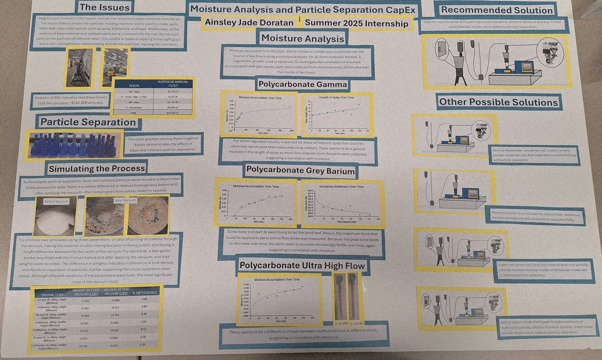
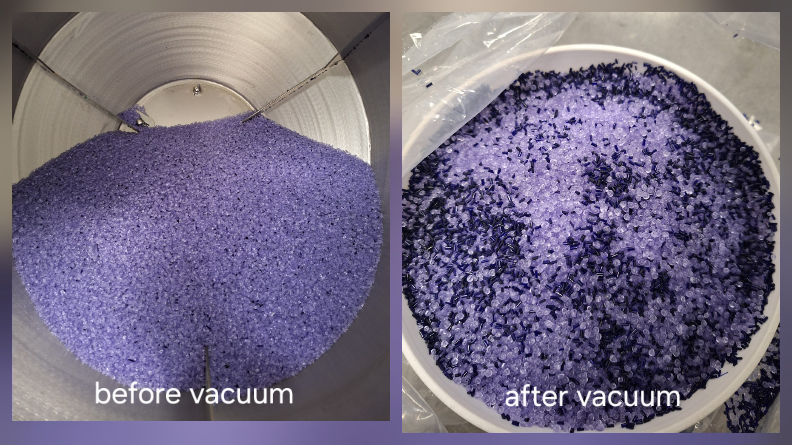

Objective: To determine whether moisture accumulation in plastic is correlated with noncomformances in manufactured parts.
Method: Use a moisture analyzer to quantify moisture content in plastic over time. Collect parts from the press and observe or measure nonconformances over the same time period.
Result: Both moisture and nonconformances were found to increase over time for a variety of plastics, indicating that there is a general correlation between the two.
Proposed solution: Use a dessicant to minimize moisture, or reduce the amount of time material is exposed to moisture-containing air.

Objective: To determine whether a vacuum contributes to separation of base and colorant particles.
Method: Weigh equal volumes of a freshly-blended mixture and of mixture after traveling through a vacuum.
Result: Different weights were found between the two, indicating different particle densities and differences in homogeneity.
Proposed solution: Install a blender right above the machine feed throat to ensure the material being used is homogeneous.
Objective: To design a shoebox-sized car powered and stopped by chemical reactions that accurately travels a given distance.
My Role: Conduct experiments to optimize a reliable battery for the car. For example, try different ratios of cathode paste ingredients.
Result: Created a functioning powering mechanism that successfully moved the car the specified distance at competition, placing 3rd at Western Regional Conference.
Objective: To build a coffee machine from scratch within a budget of $100, using skills like Arduino, laser cutting, CAD, and 3D printing.
My Role: Design the process flow diagram, laser cut the wooden structure such that all components fit neatly. Create slides and present machine to a panel.
Result: Fully functioning machine that placed 1st among all coffee machines placed in the competition that year.

{kind=link}
{kind=link}